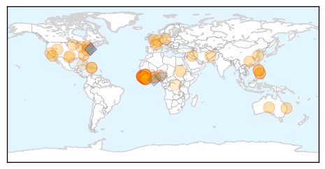
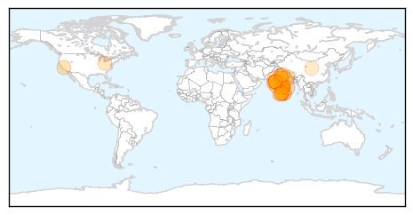

Ebola
30-Day Web Trend
0 alerts, 0 warnings

30-Day Twitter Trend
3 alerts, 0 warnings

Article Locations
Article Confidences

Top Articles:
- 1.000
- Ebola threatens economic gains in affected countries
- 1.000
- Ebola threatens economic gains in affected countries
- 1.000
- Researchers study epidemiology of Ebola Virus Disease to prevent future disease outbreaks
- 0.999
- What Ebola Teaches Us About Public Health In America
- 0.999
- Filipino doctors back from Africa want OFW ban, quarantine to stay
- 0.999
- Researchers fear Ebola virus has mutated and are studying contagion degree — MercoPress
- 0.998
- Guinea to expand use of experimental anti-Ebola drugs
- 0.997
- 'Fear, instability made it difficult to control Ebola in Africa'
- 0.997
- Every Single Kid Who Was Orphaned By Ebola In Guinea Now Has A Home
- 0.997
- The Coca-Cola Africa Foundation continues its Ebola relief efforts through clean water access
- 0.997
- Experimental anti-Ebola drug approved for wider use in Guinea
- 0.996
- 21-day quarantine for OFWs from Ebola-hit countries stays
- 0.995
- After The Worst In Liberia And Sierra Leone
- 0.994
- Togolese President Pays Solidarity visit to Sierra Leone
- 0.993
- Ebola quick test from Germany
- 0.993
- Guinea approves wider use of Ebola drug
- 0.992
- DOH stands pat on 21-day Ebola quarantine
- 0.989
- Ebola survivors clinic to be established « Awoko Newspaper
- 0.988
- Last mile in fight against Ebola will be the hardest says senior UN relief official
- 0.983
- Twists, turns, eventually lead to promising Ebola vaccine
- 0.983
- Twists, turns, eventually lead to promising Ebola vaccine
- 0.982
- Twists, turns eventually lead to promising Ebola vaccine
- 0.981
- Sierra Leoneans in Australia donate to Salone government
- 0.980
- Md. local governments lax in learning about open meetings
- 0.980
- Inmate at center of Baltimore jail scandal gets 12 years
- 0.980
- RadioShack will close 15 Baltimore-area stores by March 31
- 0.971
- As Ebola fades, questions arise over billions in US aid
- 0.969
- Ebola Vaccine Trials Can Offer 'Signs Of Hope'
- 0.961
- National
- 0.961
- US Nurse donates 40ft container OF medical supplies to fight Ebola « Awoko Newspaper
- 0.951
- Chinese executes business tycoon linked to murder
- 0.951
- Sierra Leone News: China trains 5,000 Community Leaders in Sierra Leone
- 0.951
- 21-day quarantine for OFWs from Ebola-hit countries stays
- 0.951
- Reinvigorating the Fight
- 0.951
- China Gives U.S.$2 Milion Ebola Food Aid
- 0.951
- Liberia: U.S$90 Million Petroleum Accord Signed
- 0.951
- China provides food aid to Ebola-hit Liberia
- 0.951
- In South Sudan, senior UN official says 'no doubt' rights violations are ongoing
- 0.946
- Chancellor pledges $50m to help countries fighting Ebola
- 0.931
- Connaught Hospital is fully functional « Awoko Newspaper
- 0.930
- Britain pledges millions to new Ebola fund
- 0.930
- My job is to help stop Ebola horror « Express & Star
- 0.916
- LIBERIA: Togolese President Faure Gnassingbe,ECOWAS’ President Kadré Ouédrago Pay One-Day Visit
- 0.898
- How a New York Psychologist and an Israeli Humanitarian Organization Are Helping Sierra Leone Stand Up to Ebola (INTERVIEW)
- 0.897
- Time's 'person of the year' feels kinda lost
- 0.866
- Time's 'Person Of The Year' Is Feeling Kinda Lost
- 0.831
- Violent protests in Ebola-hit Guinea after imam's arrest
- 0.805
- ECOWAS vows efforts to resume flights to Sierra Leone
- 0.798
- Secretary-General Appoints Bintou Keita of Guinea Ebola Crisis Manager for Sierra Leone
- 0.792
- Sierra Leone News : WHH Provides food and Non-food items to Quarantined Homes at Peninsular Area: Sierra Leone News
Showing top 50 articles...
Top Tweets:
- 0.921
- Twists & Turns Lead To Promising Ebola Vaccine - CBS Local http://t.co/un0wUb9iVd ebola EVD
- 0.900
- Sierra Leone's Ministry of Health recorded 19 new cases of Ebola at the weekend. Declining figures, but the battle continues.
- 0.898
- Twists, turns, eventually lead to promising Ebola vaccine - U.S. News & World Report http://t.co/3YpKl4R2wp ebola EVD
- 0.896
- After Ebola: See Life Returning to Normal in Liberia - TIME http://t.co/xkuREx7Yk6 ebola EVD
- 0.885
- Ebola Update: 22,525 confirmed, probable and suspected cases in 3 most affected countries, with 9,004 deaths. EbolaResponse
- 0.861
- German drugmaker Stada to launch rapid test for Ebola - Reuters http://t.co/sUzl019UAw ebola EVD
- 0.861
- German drugmaker Stada to launch rapid test for Ebola - Reuters http://t.co/EquMmHeTnZ ebola EVD
- 0.854
- Persevering past roadblocks to build promising Ebola vaccine - Yahoo News http://t.co/IvjQpGQcYk ebola EVD
- 0.831
- Ebola On The Ground: Ebola Deeply and OkayAfrica at Sierra Leone’s Epicenter http://t.co/ZIHTpIxJzb via
- 0.814
- Twists, Turns, Eventually Lead to Promising Ebola Vaccine - ABC News http://t.co/uxv2sU0fFt ebola EVD
- 0.814
- Twists, Turns, Eventually Lead to Promising Ebola Vaccine - ABC News http://t.co/ZtfyWoGs4K ebola EVD
- 0.814
- Twists, Turns, Eventually Lead to Promising Ebola Vaccine - ABC News http://t.co/LM7e9B4wPO ebola EVD
- 0.802
- Guinea's Health Minister Says Ebola Situation 'Improving' Via http://t.co/YUlzbVgaic
- 0.799
- Burnings, Bombings, Ebola: Not All Dramatic Events Are Game-Changers - Daily Beast http://t.co/l7jZu1pq3X ebola EVD
- 0.799
- Burnings, Bombings, Ebola: Not All Dramatic Events Are Game-Changers - Daily Beast http://t.co/fBgRqsRzLb ebola EVD
- 0.799
- Burnings, Bombings, Ebola: Not All Dramatic Events Are Game-Changers - Daily Beast http://t.co/Snw61HQ3Vx ebola EVD
- 0.799
- Burnings, Bombings, Ebola: Not All Dramatic Events Are Game-Changers - Daily Beast http://t.co/J4hcoWAzcV ebola EVD
- 0.799
- Burnings, Bombings, Ebola: Not All Dramatic Events Are Game-Changers - Daily Beast http://t.co/BnIMDxwhn9 ebola EVD
- 0.799
- Burnings, Bombings, Ebola: Not All Dramatic Events Are ?Game-Changers? - Daily Beast http://t.co/N0mPQCyBps ebola EVD
- 0.788
- Part 3 in our Sierra Leone Ebola series with follows medical students who join a surveillance team http://t.co/9Z9NLVLDp3
- 0.773
- Government pledges nearly £33m to new Ebola fund - BBC News http://t.co/oGkHvePptK ebola EVD
- 0.742
- As Ebola fades, questions arise over billions in US aid - Fox News http://t.co/yenkGpd9cb ebola EVD
- 0.742
- As Ebola fades, questions arise over billions in US aid - Fox News http://t.co/ueTAt5xYKk ebola EVD
- 0.742
- As Ebola fades, questions arise over billions in US aid - Fox News http://t.co/Yz3uMivIlr ebola EVD
- 0.742
- As Ebola fades, questions arise over billions in US aid - Fox News http://t.co/HsTScDbVvQ ebola EVD
- 0.638
- A photographer documents Ebola’s deadly spread. http://t.co/qkAg5oxNUJ Via
- 0.626
- Via: To Get To Zero Ebola Cases, It'll Cost A Lot: Roughly $1.5 Billion http://t.co/RRizOAxizO Ebola Ebolaresponse Ebolaoutbreak
- 0.626
- RT: Ebola On The Ground, Part 3: The Ebola Surveillance Team: http://t.co/k5Bm1AiT69 http://t.co/GPTuFcIIcp
- 0.542
- RT: This is brilliant & @okayafrica produce on-the-ground ebola reporting from Sierra Leone 2 min video https://t.…
- 0.529
- CDC has updated U.S. guidance on lab testing for assessment & care of patients for whom Ebola is a concern. http://t.co/5n4oJLnVom
Swine Flu
30-Day Web Trend
16 alerts, 5 warnings

30-Day Twitter Trend
0 alerts, 0 warnings

Article Locations
Article Confidences

Top Articles:
- 1.000
- 42 swine flu cases in Mumbai so far, death toll at 5
- 0.999
- Hospitals on Alert After Recording 95 Cases of H1N1
- 0.999
- Swine flu epidemic hits Gujarat with 831 cases in just 40 days
- 0.999
- Seven new Swine flu deaths, toll 88
- 0.998
- Swine flu claims more lives in state
- 0.998
- No swine flu vaccine for NMC workers, GMCH staff
- 0.997
- the edge of knowledge
- 0.997
- Five More Succumb to Swine Flu in Gujrat; Death Toll Reaches 71
- 0.995
- Educational institutes in Bhopal issued H1N1 guidelines
- 0.994
- First Swine Flu Case in Himachal, 59-Year Woman Tests Positive
- 0.994
- Swine flu scare: 831 cases, 88 deaths in Gujarat
- 0.994
- One more case of swine flu detected in Thane
- 0.993
- Swine Flu Claims 42 Lives in Telangana Since Jan 1
- 0.992
- Swine flu death toll reaches 92 in Rajasthan
- 0.991
- Maharashtra on alert after spurt in H1N1 cases
- 0.991
- Eight more H1N1 deaths in Bhopal and Indore in last two days
- 0.977
- A(H1N1): Health Department’s directive to private hospitals
- 0.976
- Swine Flu deaths despite availability of vaccine- Business News
- 0.975
- Swine Flu Kills 9 in Karnataka; 50 New Cases Reported in Bengaluru
- 0.973
- Ruia Hospital nurse diagnosed with swine flu-like symptoms
- 0.970
- 7 more suspected swine flu cases in Agra
- 0.959
- Going viral, literally
- 0.957
- Khader Calls Meeting as H1N1 Deaths Touch 5
- 0.950
- Swine Flu Cases Surge to 40 in Lucknow
- 0.936
- Eight Swine Flu Deaths Out of 118 Cases in State So Far, Govt on Alert
- 0.935
- Swine flu toll climbs to 53 in Telangana
- 0.883
- Confidence in government may play key role in public's willingness to take swine flu vaccine
- 0.838
- Swine flu toll crosses 100 in Rajasthan
- 0.834
- Kids turned away from school on swine flue scare
- 0.753
- Confidence in government may play key role in public's willingness to take swine flu vaccine
- 0.638
- Plan for Hong Kong's own vaccine plant deserves full support
Top Tweets:
-
No tweets found for Feb 09, 2015